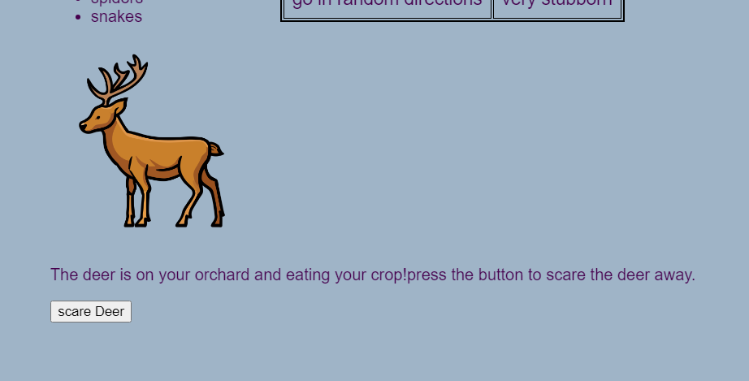
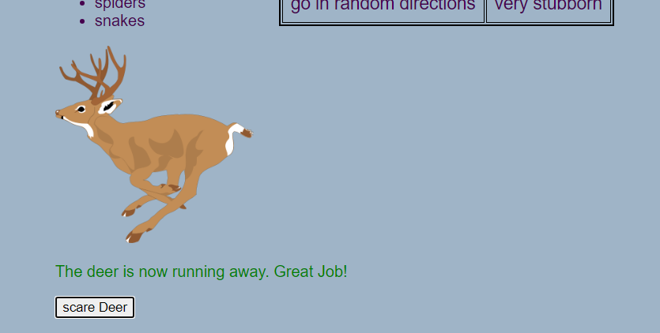
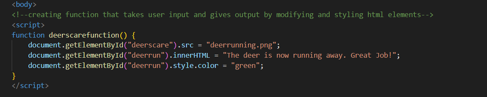
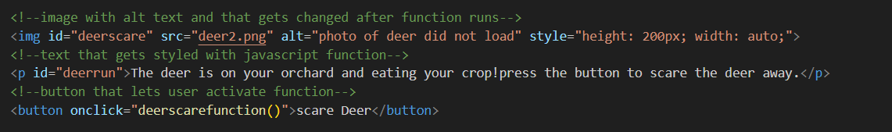

Who: JavaScript is primarily a client-side scripting language, executing code within the user's browser rather than on a web server.
What and how:It lets programmers manage user input, validate forms, update the page seamlessly, and carry out autonomous action through the use of JavaScript rules which are called scripts.
When:It allows programmers to create dynamic and interactive elements on web pages, transforming static content into an engaging user experience. JavaScript allows content on websites to be changed in real time without needing the page to refresh which makes it act smoothly to human input.
In summary, JavaScript is at the forefront of modern web development as it lets programmers design responsive, dynamic, and interactive web pages. It is an essential aspect of web development due to its versatility and the support it receives from the coding community. All of the main web browsers support JavaScript, which offers a consistent structure on a variety of platforms. It is a significant language for web development because of its widespread use.
JavaScript felt the most familiar to me due to its similarity to python, but I still had my challenges. For me this time, it was getting used to each operation and how to best utilize them. were many times while I coded my second assignment where I was lost in possibilities because with JavaScript and any other language, you code depending on your needs. Luckily, the teacher gave us some examples and how we could use JavaScript to make a game or a calculator of some sorts. I had no need for it on this project but on my G2T assignment, I decided to make deer chasing annoyingness calculator to stick with my previous theme.
On the second assignment, we had to incorporate Javascript. I added a section where if a button is pressed, there is a change on the users display.
 I created a function using JavaScript that creates changes to objects with certain ID's. The button press is what activates the function. The function changes the image, changes the contents of the text, and the colour of the text
 